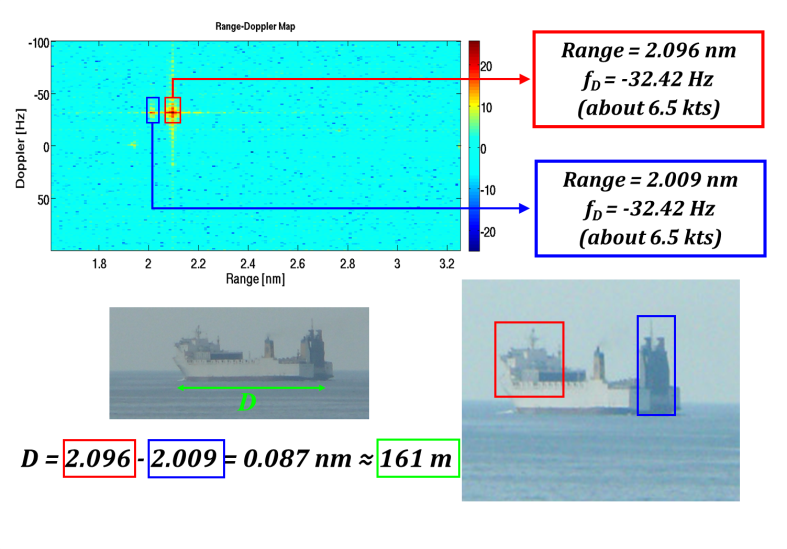
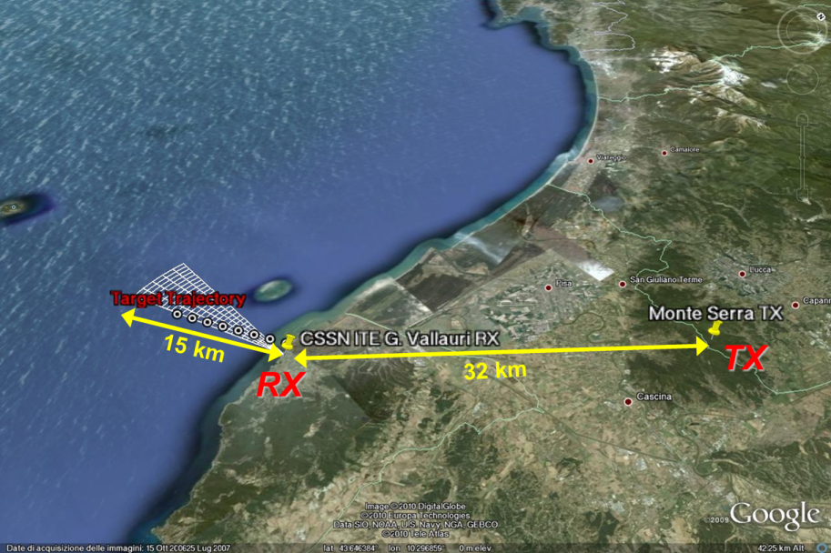
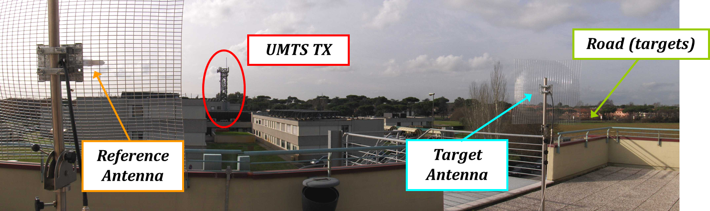
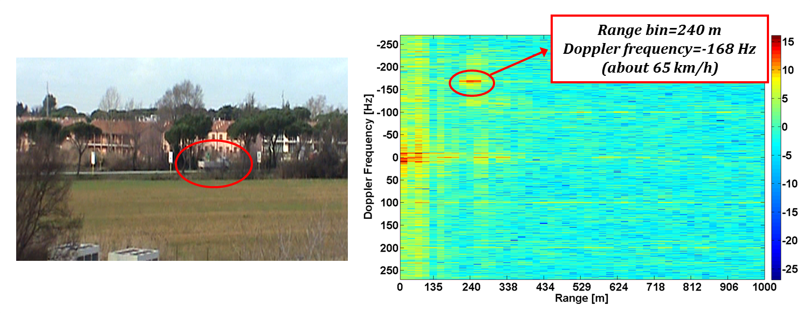

USRP Technology for Multiband Passive Bi-Static RADAR
Authors：Amerigo Capria, Dario Petri, Michele Conti, Fabrizio Berizzi
Ettus Research Products Used：USRP1 and USRP 210 equipped with DBSRX daughterboard
Research Institution：CNIT (National Inter-University Consortium for Telecommunications)
Laboratory：RaSS (Radar and Surveillance Systems) National Laboratory
Application Area：Radar Systems
DVB-T Range-Doppler map relative to a ship detection at around 2.1 nautical miles (nm) from the receive. The target structure presents two main scattering structures; a huge one at bow and another big one at stern.
Challenge:
The National Inter-University Consortium for Telecommunications (CNIT) was faced with the challenge of creating an affordable and flexible Passive Bi-Static Radar demonstrator.
Solution:
The flexibility of the USRP1 and USRP N210 was exploited in the development of a cost-effective, configurable Passive Bi-Static RADAR demonstrator.
Introduction
CNIT (National Interuniversity Consortium for Telecommunications) is a non-profit organization of 40 Italian Universities that coordinates and promotes theoretical and practical research activities in a collaborative environment, including industry and academia. The organization focuses on Telecommunication and ICT areas.
Passive Bi-Static RADAR (PBR) technology is interesting to many industries and organizations because it provides lower-cost, lower-power, and more covert surveillance capability compared to active RADAR technology. Passive RADAR allows operators to detect, measure and track targets without transmitting a primary signal. Instead of transmitting the passive RADAR exploits other signals, typically broadcast transmission. These are commonly referred to as illuminators of opportunity (IO). Interest on passive radar has recently grown as the number of transmitters increases, the number of digital signal types increase, and there is pressure to optimize costs for RADAR systems. The National Inter-University Consortium for Telecommunications (CNIT) established an objective to create an affordable and flexible PBR demonstration and test platform. It would initially be used to demonstrate PBR technology with DVB-T and UMTS.
A passive RADAR architecture guarantees a continuous surveillance without employing transmitters, therefore minimizing costs and power consumption. Implementing a software-defined PBR allows a high level of flexibility and allows the team to adapt to changing environments and requirements. The advantages of this system suggests the possibility of employing passive radars on a wide range of concerned applications such as homeland security, costal surveillance and early warning system for vehicles detection.
Passive RADAR Overview
A PBR receiver generally uses two receiving channels denoted as reference channel and surveillance channel. The reference channel is used to capture the direct signal from the transmitter and provides a reference signal to be compared with the target return. The performance of such systems is strictly related to the main characteristics of the used IO.
PBRs based on analogue signals show detection performance strongly dependent on the signal content. In other words the spectral properties of the signals, as well as the transmitted powers, are heavily related to the type of the transmitted information. On the contrary digital waveforms, thanks to specific signal coding, have spectral properties that are independent of the signal content. Among the digital IOs, the researchers decided to focus on UMTS and DVB-T signals, which exhibit wide bandwidth providing good spatial resolution.
Figure 1 – DVB-T experiment scenario geometry. The receiver was located at the "CSSN-ITE G. Vallauri" Institute in Livorno, the exploited DVB-T transmitter was located on "Monte Serra" in Pisa (around 32 km far from the receiver) and the surveillance antenna was directed towards an area of sea in front of the receiver site.
Implementation Options
The team performed a trade study examining the characteristics of the Ettus Research USRP devices, and many other software defined radios (SDRs). Unlike other off-the-shelf options, the USRP family represents a complete and versatile solution. The needs for the experiments included a board able to acquire different types of waveforms, and therefore a flexible on the RF frontend. The team wanted hardware able to easily change carrier frequency, RF gain, channel bandwidth, etc. The demonstrator also required an ability to receive from two synchronized channels simultaneously. All of these capabilities were provided by the USRP hardware.
Considering material cost and ease of development, the USRP SDRs were the best option when compared against custom, or other off-the-shelf options and the USRP N210 was therefore chosen to develop this multiband PBR demonstrator operating with both DVB-T and UMTS signals.
Rapid Development Path
The equipment used for the passive bi-static radar experiments is composed by commercial off-the-shelf, low-cost TV antennas (DVB-T reception) or grid parabolic antennas (UMTS reception) together with two synchronized USRP N210 boards equipped with the DBSRX daughterboard. The key feature of this configuration is the ability to be tuned via software at 800 MHz or 2.1 GHz in order to exploit the two different IOs. The system management and control was implemented in a C++ framework using the UHD API. The main functionalities relate to tuning, filtering, amplification, sampling, decimation and data transfer. Finally, all the radar signal processing algorithms were implemented on a workstation jointly exploiting CPU/GPU.
Figure 2 – UMTS experiment set-up. The receiver was placed at the Department of Information Engineering of the University of Pisa. The baseline length (transmitter-receiver distance) was about 114 m. The UMTS downlink channel was operating at 2.1367 GHz. Cars and trucks travelling on a roadway near the department (about 250 m from the receiver) were considered as targets of interest.
USRP N210 Leads to Successful PBR Implementation
The SDR concept proved to be a successful application for a multiband passive bi-static RADAR implementation. Specifically, the low-cost solution was used for implementing a multiband PBR demonstrator capable of exploiting both DVB-T and UMTS signals. Experimental results proved the feasibility of a DVB-T/UMTS based PBR systems by using software defined architecture. Preliminary measurements focused on the ambiguity function shows the suitability of both signals for radar applications. An experimental system was set up and live data acquired. The radar functionality was tested on in a coastal environment for ship detection and also on a urban area looking at moving targets like cars and trucks.
Figure 3 – UMTS Range-Doppler map relative to a vehicle detection. The target echo is easily recognizable in the range bin corresponding to 240 m (receiver-target distance) with a negative Doppler frequency equal to 168 Hz (i.e.: about 65 km/h).